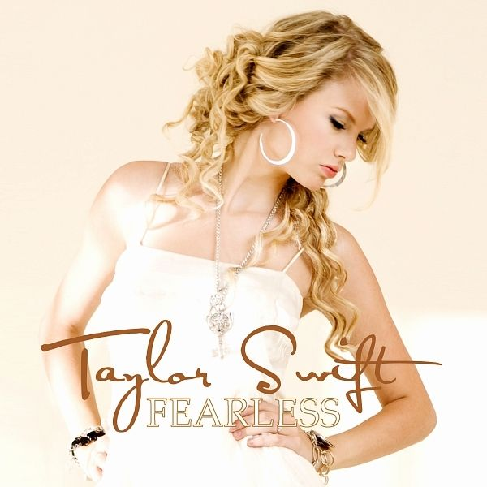
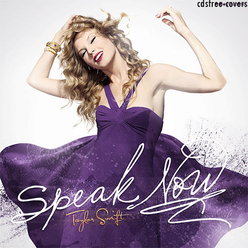
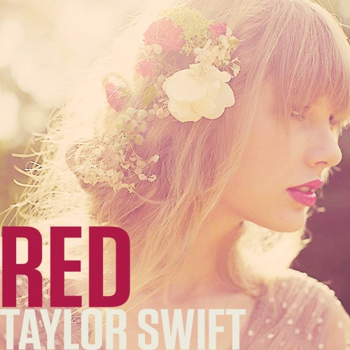
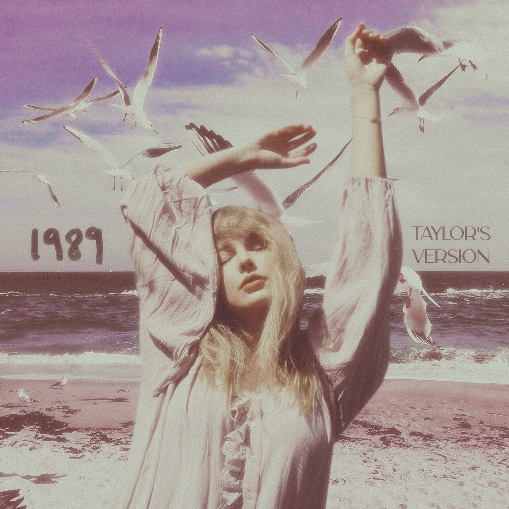
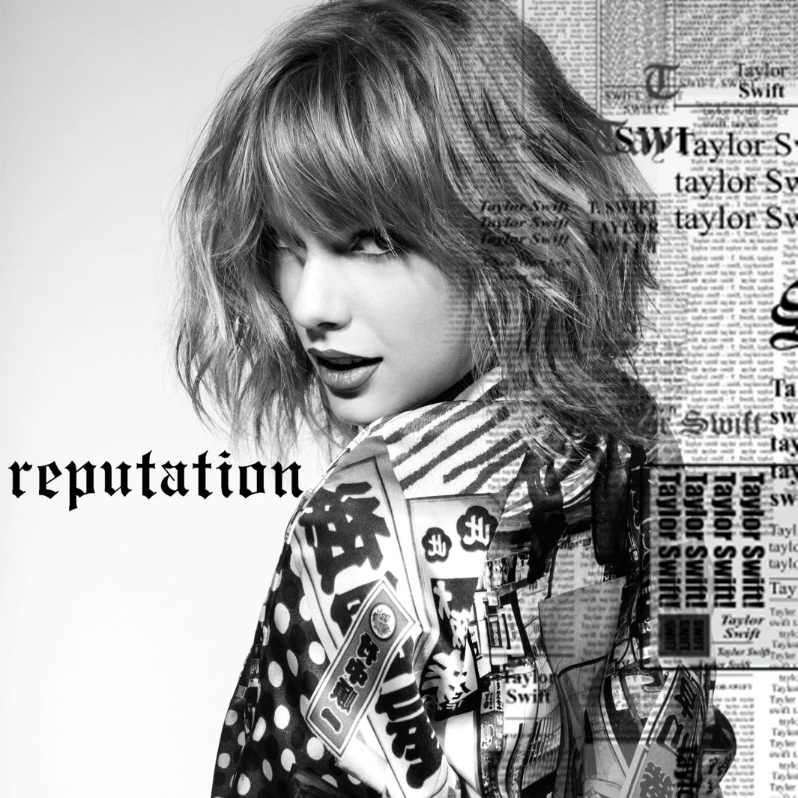
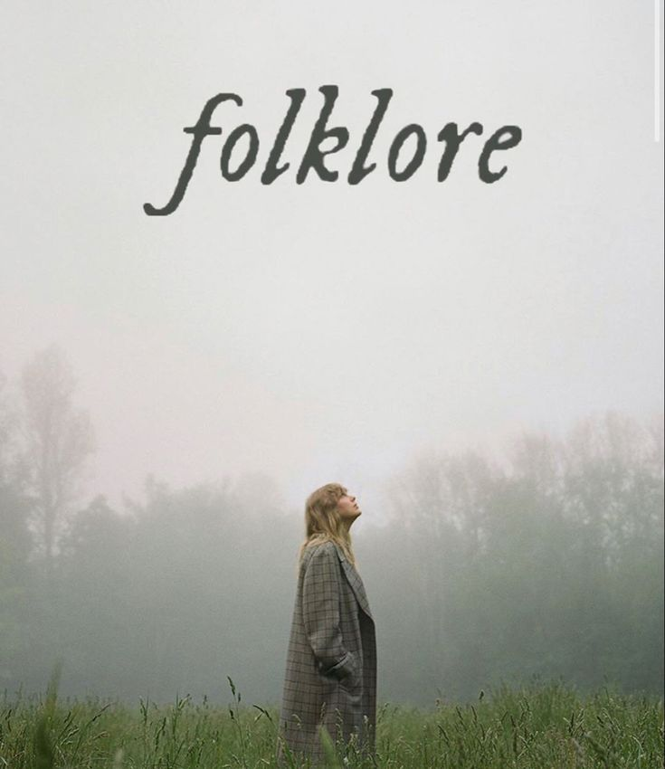
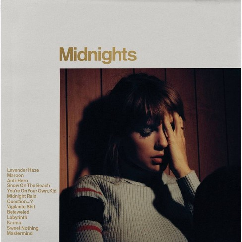

All of Taylor Swift's Album Eras and Their Distinctive Styles
From Taylor Swift to Midnights, L'OFFICIEL takes a look at Taylor Swift's album aesthetics.
03.22.2023 by Skylar Elizabeth
Taylor Swift has been releasing music since the age of 16. Now, at age 33, she recently released her newest album Midnights, and it looks totally different than anything we've seen from her. Taylor has been constantly reinventing her public image since her very first album. From country sweetheart to pop icon to indie folk singer, Swift has explored many different aesthetics in her 16-year career. As she begins her Eras Tour, let's look back at the last 11 album eras.
Taylor Swift (2006)

Swift's debut album was simply titled Taylor Swift. Fully country and written while she was in high school, the innocence and youthfulness were reflected in her tight curls, sundresses, and cowboy boots.
Fearless (2008)
Swift's second album Fearless established her as a crossover artist with the success of singles "Love Story" and "You Belong With Me." Fearless remains the most awarded album in country music history, including Album of the Year at the Grammy Awards in 2010. Her style for this album consisted of sparkly fringe dresses, ballgowns, and her signature lucky number 13 painted on the back of her hand.
Speak Now (2010)
With Speak Now, Swift really leaned into theatrical elements. Her music video for "Mean" had her leaning into her country roots, while her red carpet looks became more glam and grown-up. Considering this was her first album in her 20s, it made sense that she seemed to be experimenting with different styles and sounds.
Red (2012)
Despite the album being a mix of country and pop, Swift's Red album has one of the most consistent aesthetics among her albums. Besides the obvious color threading it together, the singer's love for all things vintage was evident throughout all of her looks. High-waisted shorts, '50s dresses, and her iconic red lip and bangs combo were all essentials of the Red era.
1989 (2014)
Swift's first full pop album came with 1989. Inspired by the golden era of '80s pop, her glittery crop tops and freshly cut bob aided her evolution to pop stardom. Like Fearless, 1989 is the most awarded pop album by any artist in history and earned Swift her second Album of the Year Grammy.
Reputation (2017)
After the drama with Kim Kardashian and Kanye West, Swift disappeared from the public eye for a year. When she came back with Reputation, she gave us an aesthetic we'd never seen from her before. The moody style of this album was emphasized by dark lipstick, black bodysuits, and snake motifs.
Lover (2019)

Drastically different from Reputation, Swift's Lover album was the rainbow after the storm. Butterflies replaced snakes and pastel pinks, blues, and purples took over the dark color palette of the past. While this era was cut short by the pandemic, the colorful celebration of love was fun while it lasted.
Folklore (2020)
While in isolation due to COVID, Swift spent her time creating an alternative indie album. Inspired by folksongs and escapism, the album's aesthetic was simple but the songwriting was some of her best. The Grammys must have agreed because Folklore earned the singer-songwriter her third Album of the Year Grammy, making her the first woman to accomplish that feat.
Evermore (2020)

Less than five months after Folklore, Swift released Evermore, a continuation of lockdown musings. The album aesthetics were very similar, with the most noticeable difference being that Folklore was a summer album while Evermore was a winter one.
Midnights (2022)
At the 2022 VMAs, Swift announced her recently released 10th original studio album, Midnights. The 13-song soundtrack maintains her pop vibes yet she has also found a soft edge to include in the sound. Swift has officially returned and has clearly come back with a new confidence and a lot to say.
Taylor Swift Songs
Our Song album
- Tim McGraw
- Picture to Burn
- Teardrops on My Guitar
- A Place in This World
- Cold as You
- The Outside
- Tied Together with a Smile
- Stay Beautiful
- Should've Said No
- Mary's Song (Oh My My My)
- Our Song
Fearless album
- Fearless
- Fifteen
- Love Story
- Hey Stephen
- White Horse
- You Belong with Me
- Breathe
- Tell Me Why
- You're Not Sorry
- The Way I Loved You
- Forever & Always
- The Best Day
- Change
Speak Now album
- Mine
- Sparks Fly
- Back to December
- Speak Now
- Dear John
- Mean
- The Story of Us
- Never Grow Up
- Enchanted
- Better than Revenge
- Innocent
- Haunted
- Last Kiss
- Long Live
Red album
- State of Grace
- Red
- Treacherous
- I Knew You Were Trouble
- All Too Well
- 22
- I Almost Do
- We Are Never Ever Getting Back Together
- Stay Stay Stay
- The Last Time
- Holy Ground
- Sad Beautiful Tragic
- The Lucky One
- Everything Has Changed
- Starlight
- Begin Again
1989 album
- Welcome to New York
- Blank Space
- Style
- Out of the Woods
- All You Had to Do Was Stay
- Shake It Off
- I Wish You Would
- Bad Blood
- Wildest Dreams
- How You Get the Girl
- This Love
- I Know Places
- Clean
Reputation album
- …Ready for It?
- End Game
- I Did Something Bad
- Don't Blame Me
- Delicate
- Look What You Made Me Do
- So It Goes…
- Gorgeous
- Getaway Car
- King of My Heart
- Dancing with Our Hands Tied
- This Is Why We Can't Have Nice Things
- Call It What You Want
- New Year's Day
Lover album
- I Forgot That You Existed
- Cruel Summer
- Lover
- The Man
- The Archer
- I Think He Knows
- Miss Americana & the Heartbreak Prince
- Paper Rings
- Cornelia Street
- Death by a Thousand Cuts
- London Boy
- Soon You'll Get Better
- False God
- You Need to Calm Down
- Afterglow
- Me!
- It's Nice to Have a Friend
- Daylight
Folklore album
- The 1
- Cardigan
- The Last Great American Dynasty
- Exile
- My Tears Ricochet
- Mirrorball
- Seven
- August
- This Is Me Trying
- Illicit Affairs
- Invisible String
- Mad Woman
- Epiphany
- Betty
- Peace
- Hoax
Evermore album
- Willow
- Champagne Problems
- Gold Rush
- 'Tis the Damn Season
- Tolerate I
- No Body, No Crime
- Happiness
- Dorothea
- Coney Island
- Ivy
- Cowboy like Me
- Long Story Short
- Marjorie
- Closure
- Evermore
Midnight album
- Lavender Haze
- Maroon
- Anti-Hero
- Snow on the Beach
- You're on Your Own, Kid
- Midnight Rain
- Question...?
- Vigilante Shit
- Bejeweled
- Labyrinth
- Karma
- Sweet Nothing
- Mastermind
List of Taylor Swift live performances
American singer-songwriter Taylor Swift has headlined six concert tours and four one-off concerts, and performed in 21 music festivals and 213 live events. She first promoted her debut album, Taylor Swift, in 2006 and 2007 through performances at several award ceremonies and television shows, including the 42nd ACM Awards and Good Morning America.[1] She then served as an opening act on tour for Rascal Flatts (2006),[2] George Strait (2007),[3] Kenny Chesney (2007),[4] Brad Paisley (2007–08),[5][6] and Tim McGraw and Faith Hill's joint tour (2007).[7] In 2009, she embarked on her first concert tour, the Fearless Tour, which visited North America, Europe, Australia and Asia, and grossed over $63 million.[8] She embarked on the Speak Now World Tour in 2011, which visited Asia, Europe, North America, and Oceania. At the end of 2011, the tour placed fourth on Pollstar's annual "Top 25 Worldwide Tours", earning $104.2 million with 100 shows.[9] This made it the highest-grossing tour by a female artist and by a solo artist in 2011. The tour ended in March 2012, and grossed over $123 million.[10] Swift's next tours broke world records. The Red Tour (2013–14) grossed $150 million, becoming the highest-grossing tour by a country artist in history.[11] The 1989 World Tour (2015) became Swift's highest grossing and most attended tour at the time, attracting 2,278,647 fans and grossing over $250 million. It became the highest-grossing tour in 2015,[12] as well as one of the highest-grossing tours of the decade.[13] Grossing over $199.4 million in North America alone, the 1989 World Tour surpassed the previous all-time high of $162 million set by the Rolling Stones in 2005; Swift became the first female artist in music history to do so.[14] With her 2018 Reputation Stadium Tour, she topped her own grossing and attendance counts set during the 1989 World Tour, including a record $14 million take from 107,550 sold tickets at Levi's Stadium.[15] In North America, the Reputation Stadium Tour grossed $202.3 million, breaking Swift's own record for the highest-grossing tour by a female artist on that continent, previously held by the 1989 World Tour, with fewer dates.[16] The Reputation Stadium Tour also broke the record for the highest-grossing U.S. tour of all time.[17] Swift's planned sixth tour, Lover Fest, was set to visit stadiums and music festivals beginning on April 5, 2020,[18] but was canceled following the fallout of the COVID-19 pandemic.[19] It was subsequently revamped as the Eras Tour, whose U.S. leg began in March 2023 and will end in August 2023.